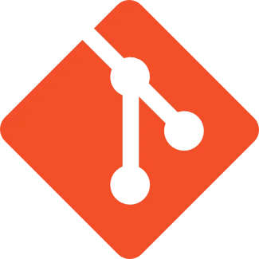
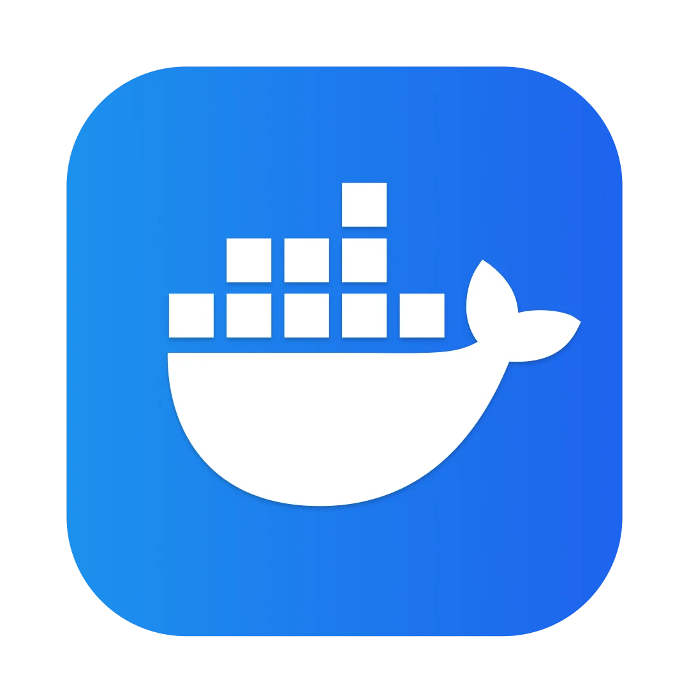

Hola, soy Ayoub K. I. J.
Especialista en soporte y administración IT, con experiencia en entornos corporativos y públicos. Gestiono sistemas Linux y Windows, redes, Microsoft 365, hardware y bases de datos, asegurando operaciones estables y eficientes. Me motiva resolver incidencias técnicas y mejorar la experiencia del usuario.


- 
- 